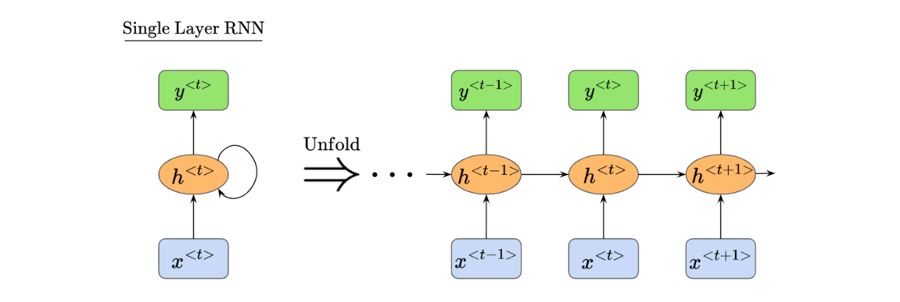
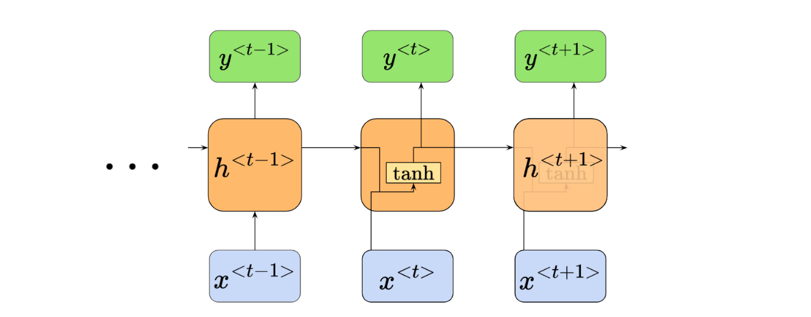
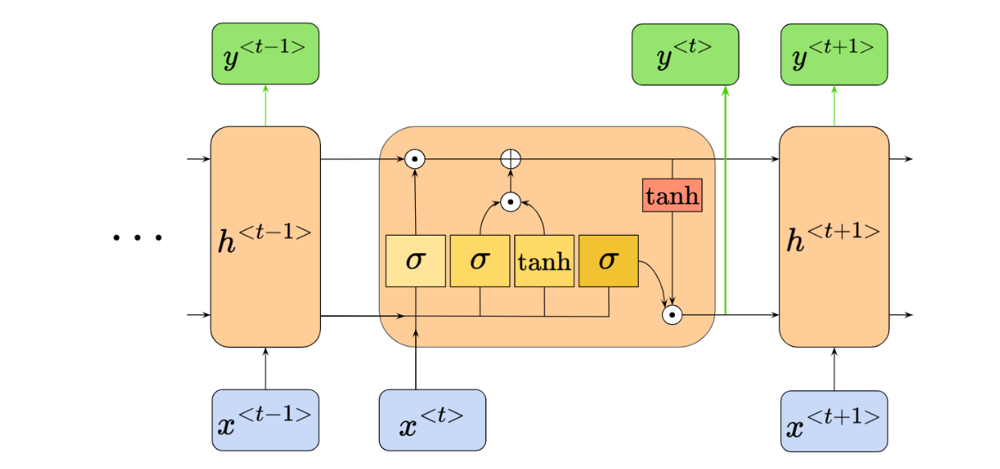
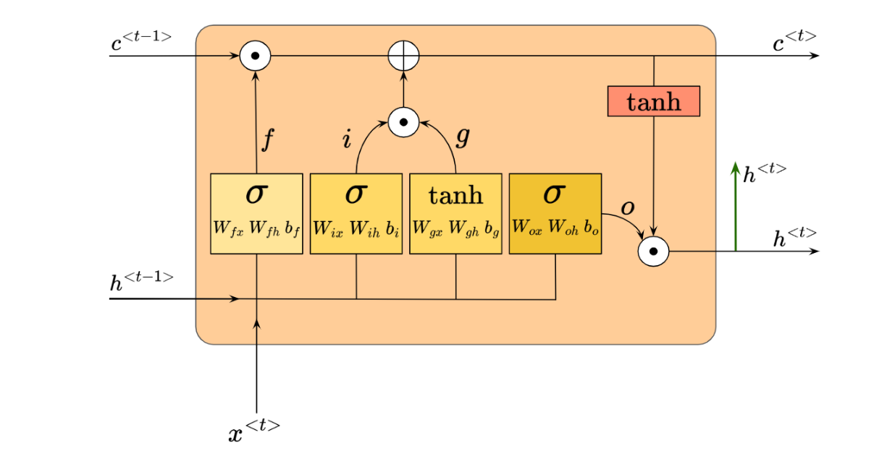
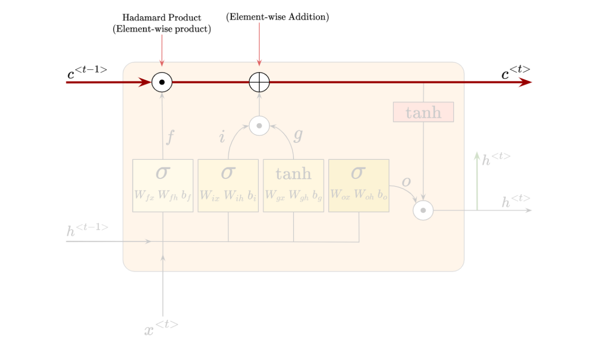
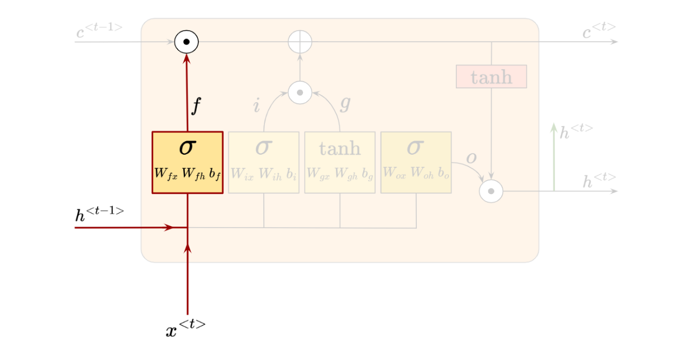
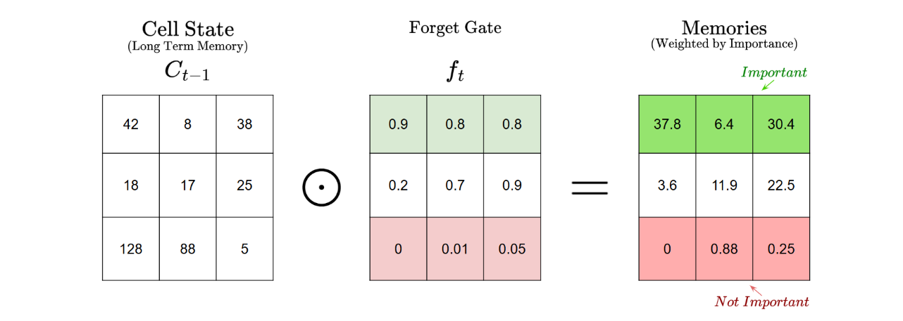
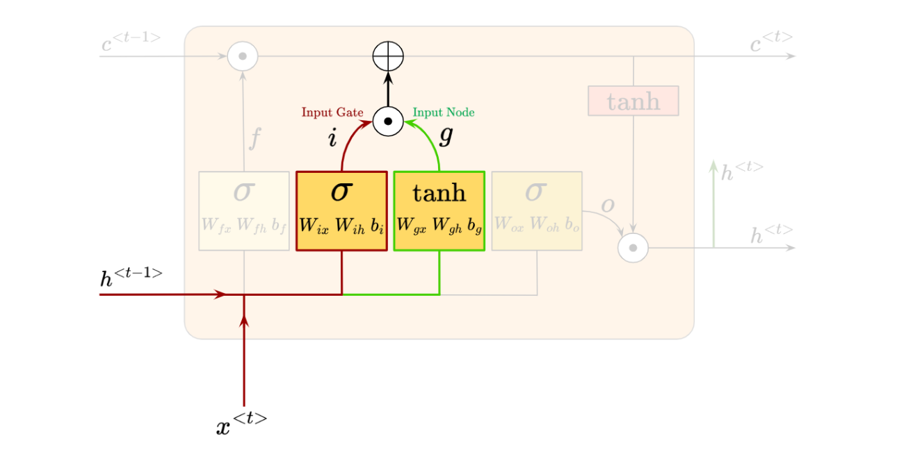
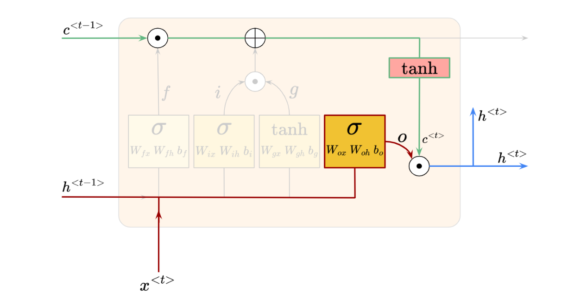

Project notes
Building Long Short-Term Memory (LSTM) from Scratch
In this project, I build an LSTM-based model with PyTorch and compare its sentence-generation performance with the RNN model from an earlier project.
In this project, I build an LSTM-based model using PyTorch and some mathematics, then compare its performance against the RNN model from the previous project when generating sentences.
We will build a simple Long Short-Term Memory (LSTM) recurrent model with PyTorch and apply it to the same task as the earlier RNN model. The goal is to compare the sentences produced by both models and understand where the LSTM architecture helps.
Given the foundational knowledge of RNNs established in the previous project, we can move relatively quickly into the theory behind LSTMs.
1. LSTM Overview
In this section, we’ll cover the architecture of the LSTM cell and examine how it improves upon the basic RNN model from the previous project. To do that, we’ll briefly review RNNs and adjust our visual perspective of them.
Recall that RNNs are a special type of neural network consisting of recursive computational loops that span adjacent time steps. We can visualize them unfolding like this:

Also recall that our RNN has biases and activation functions. We described the net input to node $h$ as $z_h^{\langle t\rangle}$, and the activation at node $h$ as $h^{\langle t\rangle}$, like so:
Net Input to Node $h$
Activation at Node $h$
Here, the activation function $\sigma_h$ is usually the tanh function.
Now, to prepare for learning about LSTMs, we’ll change our visual understanding of RNNs just a little. We’ll need to see RNNs as forming a chain of repeating modules, with a very simple structure, such as a single tanh layer:

We can see that our node $h^{\langle t\rangle}$ is now an “x-ray” image of itself, where we can see how its inputs map to its activation function and to the outputs. We’ll use this visual perspective when moving forward to learn about LSTMs. We’ll also call the central node $h$ the “repeating module”.
LSTMs also have this chain-like structure, but the repeating module has a more complicated internal structure. Instead of the single tanh neural network layer used earlier, the LSTM repeating module has four components:

Wow, things got complicated fast. We’ll go into more detail in the next few steps. But for now, the key takeaway is that we now have tanh and sigmoid $\sigma$ activation functions in our repeating module.
There is also a new input/output at the top of the repeating module, giving us a total of three outputs: two outputs to the next repeating module, and one output to node $y$ (colored in green).
Let’s zoom into a single repeating module for now and add some labels so we can describe each component. We call this a single LSTM cell:

Notice the weight and bias inputs for each activation block within the cell. We also see the activated outputs, $f$, $i$, $g$, and $o$. We see the usual $h^{\langle t-1\rangle}$, $x^{\langle t\rangle}$, and $h^{\langle t\rangle}$ inputs and outputs. Finally, there is a new pair of inputs and outputs in the form of $c^{\langle t-1\rangle}$ and $c^{\langle t\rangle}$.
We’ll understand how the LSTM works by going through each core component. Let’s begin with the new inputs and outputs, $c^{\langle t-1\rangle}$ and $c^{\langle t\rangle}$.

This component, called the “cell state”, is central to the LSTM architecture. It is shown as a horizontal line passing through the top of the LSTM cell, and it goes through only two minor linear interactions, represented by the white pieces.
The cell state passes information through, and the LSTM can add or remove information from the cell state through the linear interactions described above.
LSTMs control the addition and removal of information through “gates”. These gates are composed of a sigmoid neural network layer and a Hadamard product, or element-wise multiplication operation.
Let’s walk through each of these gates. Along the way, we’ll build an intuition for how they control information flow with the sigmoid activation.
We’ll begin with the “Forget Gate”. It is called the Forget Gate because it decides which information to forget, or remove, from the cell state. It looks like this:

The sigmoid layer takes in $h^{\langle t-1\rangle}$ and $x^{\langle t\rangle}$, then outputs $f_t$, where:
The Forget Gate’s output $f_t$ has the same dimensionality as the previous cell state $C_{t-1}$. Since $f_t$ uses the sigmoid activation function, all of its values are forced between 0 and 1. Then, an element-wise multiplication happens between $c_{t-1}$ and $f_t$.
Let’s try to understand intuitively why this sigmoid activation and element-wise multiplication help us decide what information to get rid of and what to keep.
Given a matrix representing the values in cell state $C_{t-1}$ and a matrix representing the values in $f_t$, here’s how the element-wise multiplication might look:

We can see that the matrix values in $f_t$ function as “weight” values, with larger values representing higher importance and smaller values representing lower importance. A value of 1 would mean completely keeping the corresponding information, while a value of 0 would mean completely removing it. The element-wise multiplication therefore weights the “memory” values in the cell state, helping us decide which memories to keep and discard.
Since the sigmoid values are between 0 and 1, the multiplication operation mostly helps us lower the importance of selected pieces of information. This is why this section is called the Forget Gate.
Now that we know how the Forget Gate works, let’s move on to the next section, involving the Input Gate and Input Node.
Here’s how the Input Gate (red) and Input Node (green) look:

Whereby we have:
As we’ve seen from the sigmoid activation, the values of $i_t$ are squeezed between 0 and 1. Meanwhile, the values of $g_t$ are between -1 and 1, thanks to the tanh activation.
$i_t$ and $g_t$ go through element-wise multiplication, and the result is then added element-wise to our cell state.
Let’s imagine how $i_t$ and $g_t$ work, in a similar manner to how we understood the Forget Gate:
- The Input Node $g_t$ is computed as $g_t = \tanh(W_{gx}x^{\langle t\rangle} + W_{gh}h^{\langle t-1\rangle} + b_g)$ and produces values between -1 and 1. Positive values reinforce a certain memory, while negative values represent an opposing adjustment to the selected memory value. We can think of the input node as raw suggestions for what should be remembered or adjusted in the cell state.
- The Input Gate $i_t$, which has a sigmoid activation, produces values between 0 and 1. Similarly to the Forget Gate, these values act as “importance weights”.
- We perform the element-wise multiplication of $i_t$ and $g_t$, producing a matrix containing positive and negative values weighted by their importance.
- Finally, we perform an element-wise addition of $(i_t \odot g_t)$ to our cell state.
Therefore, the Input Node and Input Gate work together to introduce new information to our cell state and modify existing information. The positive values represent new information, while the negative values represent corrective updates to the existing memory. Without the negative values from tanh, LSTMs could only increase memory, never correct or reduce it.
After going through the Forget Gate, Input Gate, and Input Node, we have our new cell state, $C^{\langle t\rangle}$. To summarize all the operations:
We can see how $f_t$, $i_t$, and $g_t$ have contributed to the new cell state $C^{\langle t\rangle}$.
Finally, we need to understand how the Output Gate updates the value of the hidden units to produce $h^{\langle t\rangle}$.
The relevant parts are highlighted, with the Output Gate shown in red:

The Output Gate produces $O_t$, which is simply:
Then, to obtain the intended updated hidden state $h^{\langle t\rangle}$, we perform the element-wise multiplication of $O_t$ and the tanh-activated updated cell state $C^{\langle t\rangle}$:
The Output Gate $O_t$ in an LSTM controls how much of the cell state’s information should influence the next time step’s hidden state $h^{\langle t\rangle}$. However, the raw cell state $C^{\langle t\rangle}$ is activated with tanh first, before performing an element-wise multiplication with $O_t$.
The tanh activation of $C^{\langle t\rangle}$ regulates the range of values because the cell state represents the LSTM’s long-term memory. Cell states can contain large values and accumulate information over time, so using them directly as $h^{\langle t\rangle}$ could make the hidden state unstable.
We need $O_t$ to act as a matrix of “importance weights” again, deciding how much of $C^{\langle t\rangle}$ should influence $h^{\langle t\rangle}$. This allows only relevant information to be passed on.
Now that we have $h^{\langle t\rangle}$, we pass it to the next layer, such as the output layer $y^{\langle t\rangle}$, and to the hidden layer at the next time step.